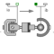
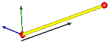

JointUPSUniversal - prismatic - spherical joint aggregation (no constraints, no potential states) |

|
Information
This information is part of the Modelica Standard Library maintained by the Modelica Association.
This component consists of a universal joint at frame_a, a spherical joint at frame_b and a prismatic joint along the line connecting the origin of frame_a and the origin of frame_b, see the default animation in the following figure (the axes vectors are not part of the default animation):

This joint aggregation has no mass and no inertia and introduces neither constraints nor potential state variables. It is especially useful to build up more complicated force elements where the mass and/or inertia of the force element shall be taken into account.
The universal joint is defined in the following way:
- The rotation axis of revolute joint 1 is along parameter vector n1_a which is fixed in frame_a.
- The rotation axis of revolute joint 2 is perpendicular to axis 1 and to the line connecting the universal and the spherical joint.
The definition of axis 2 of the universal joint is performed according to the most often occurring case. In a future release, axis 2 might be explicitly definable via a parameter. However, the treatment is much more complicated and the number of operations is considerably higher, if axis 2 is not orthogonal to axis 1 and to the connecting rod.
Note, there is a singularity when axis 1 and the connecting line are parallel to each other. Therefore, if possible n1_a should be selected in such a way that it is perpendicular to nAxis_ia in the initial configuration (i.e., the distance to the singularity is as large as possible).
An additional frame_ia is present. It is fixed on the line connecting the universal and the spherical joint at the origin of frame_a. The placement of frame_ia on this line is implicitly defined by the universal joint (frame_a and frame_ia coincide when the angles of the two revolute joints of the universal joint are zero) and by parameter vector nAxis_ia, an axis vector directed along the line from the origin of frame_a to the spherical joint, resolved in frame_ia.
An additional frame_ib is present. It is fixed in the line connecting the prismatic and the spherical joint at the origin of frame_b. It is always parallel to frame_ia.
Note, this joint aggregation can be used in cases where in reality a rod with spherical joints at each end are present. Such a system has an additional degree of freedom to rotate the rod along its axis. In practice this rotation is usually of no interest and is mathematically removed by replacing one of the spherical joints by a universal joint.
The easiest way to define the parameters of this joint is by moving the MultiBody system in a reference configuration where all frames of all components are parallel to each other (alternatively, at least frame_a, frame_ia and frame_ib of the JointUSP joint should be parallel to each other when defining an instance of this component).
Parameters (13)
| animation |
Value: true Type: Boolean Description: = true, if animation shall be enabled |
|---|---|
| showUniversalAxes |
Value: true Type: Boolean Description: = true, if universal joint shall be visualized with two cylinders, otherwise with a sphere (provided animation=true) |
| n1_a |
Value: {0, 0, 1} Type: Axis Description: Axis 1 of universal joint resolved in frame_a (axis 2 is orthogonal to axis 1 and to line from universal to spherical joint) |
| nAxis_ia |
Value: {1, 0, 0} Type: Position[3] (m) Description: Axis vector along line from origin of frame_a to origin of frame_b, resolved in frame_ia |
| s_offset |
Value: 0 Type: Position (m) Description: Relative distance offset (distance between frame_a and frame_b = s(t) + s_offset) |
| sphereDiameter |
Value: world.defaultJointLength Type: Diameter (m) Description: Diameter of spheres representing the spherical joints |
| axisDiameter |
Value: sphereDiameter / Types.Defaults.JointRodDiameterFraction Type: Diameter (m) Description: Diameter of cylinder on the connecting line from frame_a to frame_b |
| cylinderLength |
Value: world.defaultJointLength Type: Distance (m) Description: Length of cylinders representing the two universal joint axes |
| cylinderDiameter |
Value: world.defaultJointWidth Type: Distance (m) Description: Diameter of cylinders representing the two universal joint axes |
| checkTotalPower |
Value: false Type: Boolean Description: = true, if total power flowing into this component shall be determined (must be zero) |
| eAxis_ia |
Value: Modelica.Math.Vectors.normalizeWithAssert(nAxis_ia) Type: Real[3] Description: Unit vector from origin of frame_a to origin of frame_b, resolved in frame_ia |
| e2_ia |
Value: Modelica.Math.Vectors.normalizeWithAssert(cross(n1_a, eAxis_ia)) Type: Real[3] Description: Unit vector in direction of second rotation axis of universal joint, resolved in frame_ia |
| e3_ia |
Value: cross(eAxis_ia, e2_ia) Type: Real[3] Description: Unit vector perpendicular to eAxis_ia and e2_ia, resolved in frame_ia |
Inputs (4)
| sphereColor |
Default Value: Modelica.Mechanics.MultiBody.Types.Defaults.JointColor Type: Color Description: Color of spheres representing the spherical joints |
|---|---|
| axisColor |
Default Value: Modelica.Mechanics.MultiBody.Types.Defaults.SensorColor Type: Color Description: Color of cylinder on the connecting line from frame_a to frame_b |
| specularCoefficient |
Default Value: world.defaultSpecularCoefficient Type: SpecularCoefficient Description: Reflection of ambient light (= 0: light is completely absorbed) |
| cylinderColor |
Default Value: Modelica.Mechanics.MultiBody.Types.Defaults.JointColor Type: Color Description: Color of cylinders representing the two universal joint axes |
Connectors (6)
| frame_a |
Type: Frame_a Description: Coordinate system fixed to the component with one cut-force and cut-torque |
|
|---|---|---|
| frame_b |
Type: Frame_b Description: Coordinate system fixed to the component with one cut-force and cut-torque |
|
| frame_ia |
Type: Frame_a Description: Coordinate system at origin of frame_a fixed at prismatic joint |
|
| frame_ib |
Type: Frame_b Description: Coordinate system at origin of frame_b fixed at prismatic joint |
|
| axis |
Type: Flange_a Description: 1-dim. translational flange that drives the prismatic joint |
|
| bearing |
Type: Flange_b Description: 1-dim. translational flange of the drive bearing of the prismatic joint |
Components (9)
| world |
Type: World |
|
|---|---|---|
| R_ia1_a |
Type: Orientation |
|
| R_ia2_a |
Type: Orientation |
|
| R_ia_a |
Type: Orientation Description: Rotation from frame_a to frame_ia |
|
| axisCylinder |
Type: Shape |
|
| sphericalShape_b |
Type: Shape |
|
| sphericalShape_a |
Type: Shape |
|
| universalShape1 |
Type: Shape |
|
| universalShape2 |
Type: Shape |
Used in Examples (1)
|
Modelica.Mechanics.MultiBody.Examples.Elementary
Demonstrate line force with two point masses using a JointUPS and alternatively a LineForceWithTwoMasses component |